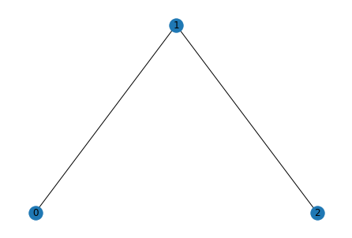

import torch
from torch_geometric.data import Data221207
https://pytorch-geometric.readthedocs.io/en/latest/modules/nn.html
edge_index = torch.tensor([[0, 1, 1, 2],
[1, 0, 2, 1]], dtype=torch.long)
x = torch.tensor([[-1], [0], [1]], dtype=torch.float)
data = Data(x=x, edge_index=edge_index)dataData(x=[3, 1], edge_index=[2, 4])import networkx as nx
import matplotlib.pyplot as pltG=nx.Graph()
G.add_node('0')
G.add_node('1')
G.add_node('2')
G.add_edge('0','1')
G.add_edge('1','2')
pos = {}
pos['0'] = (0,0)
pos['1'] = (1,1)
pos['2'] = (2,0)
nx.draw(G,pos,with_labels=True)
plt.show()
from torch.nn import Linear, ReLU
from torch_geometric.nn import Sequential, GCNConvex
model = Sequential('x, edge_index', [
(GCNConv(in_channels, 64), 'x, edge_index -> x'),
ReLU(inplace=True),
(GCNConv(64, 64), 'x, edge_index -> x'),
ReLU(inplace=True),
Linear(64, out_channels),
])model = Sequential('x, edge_index', [
(GCNConv(3, 64), 'x, edge_index -> x'),
ReLU(inplace=True),
(GCNConv(64, 64), 'x, edge_index -> x'),
ReLU(inplace=True),
Linear(64, 3),
])model(x,edge_index)from torch.nn import Linear, ReLU, Dropout
from torch_geometric.nn import Sequential, GCNConv, JumpingKnowledge
from torch_geometric.nn import global_mean_poolmodel = Sequential('x, edge_index, batch', [
(Dropout(p=0.5), 'x -> x'),
(GCNConv(dataset.num_features, 64), 'x, edge_index -> x1'),
ReLU(inplace=True),
(GCNConv(64, 64), 'x1, edge_index -> x2'),
ReLU(inplace=True),
(lambda x1, x2: [x1, x2], 'x1, x2 -> xs'),
(JumpingKnowledge("cat", 64, num_layers=2), 'xs -> x'),
(global_mean_pool, 'x, batch -> x'),
Linear(2 * 64, dataset.num_classes),
])model = Sequential('x, edge_index, batch', [
(Dropout(p=0.5), 'x -> x'),
(GCNConv(dataset.num_features, 64), 'x, edge_index -> x1'),
ReLU(inplace=True),
(GCNConv(64, 64), 'x1, edge_index -> x2'),
ReLU(inplace=True),
(lambda x1, x2: [x1, x2], 'x1, x2 -> xs'),
(JumpingKnowledge("cat", 64, num_layers=2), 'xs -> x'),
(global_mean_pool, 'x, batch -> x'),
Linear(2 * 64, dataset.num_classes),
])torch_geometric.nn.Linear()